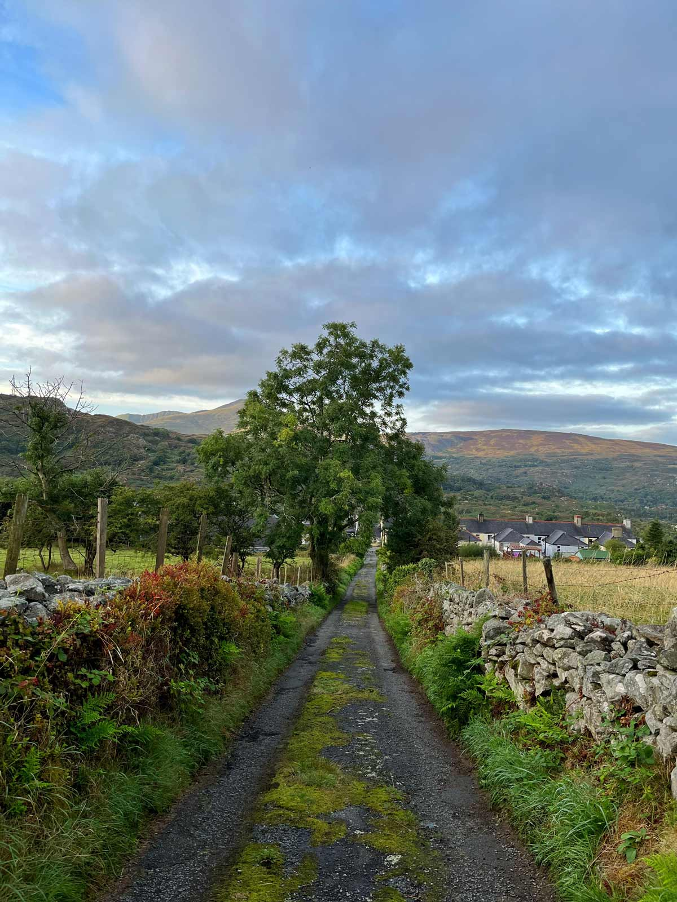
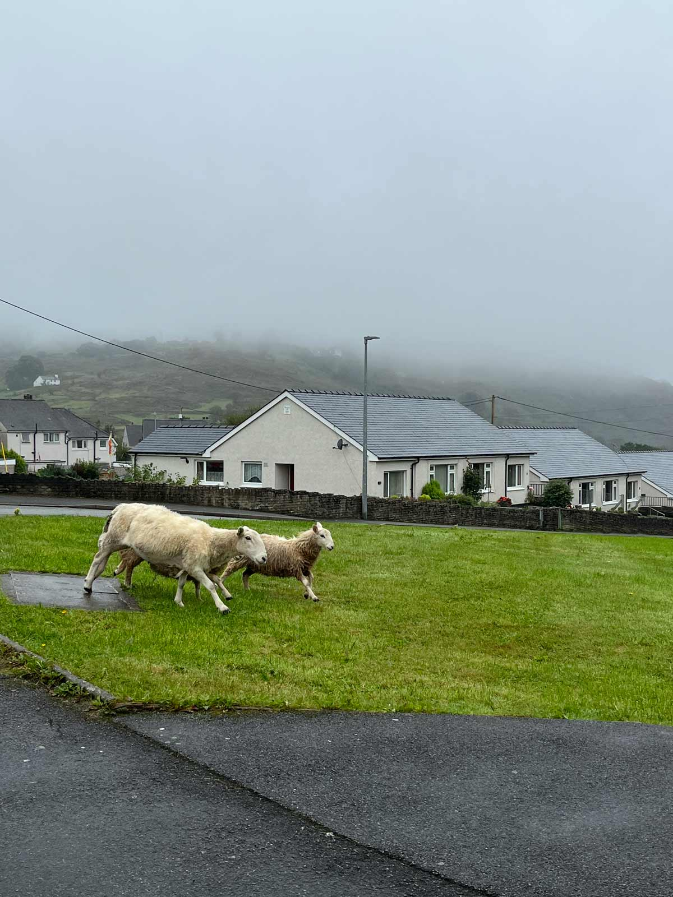
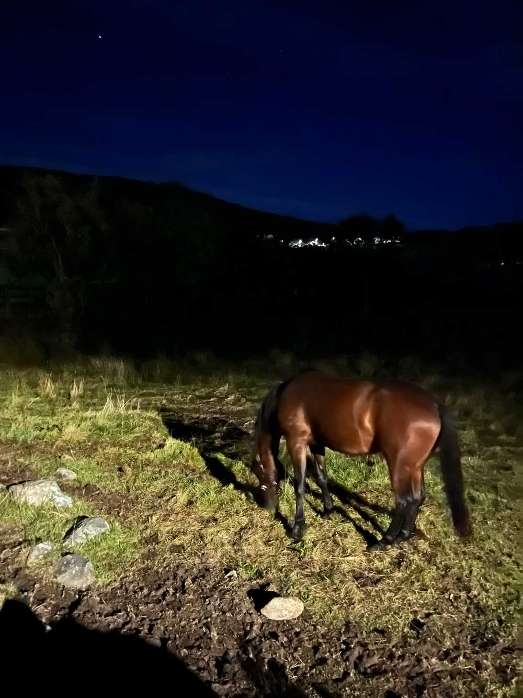
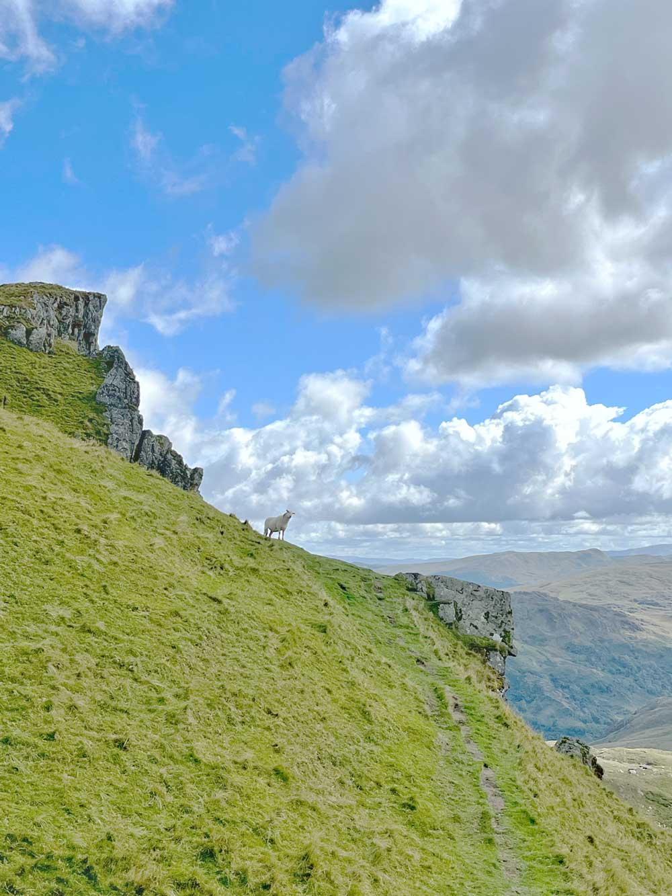

To envy sheep is to crave peace.
For years I avoided thinking too much about the sheep, and about Defaiddwyn.
I wish I could say I was of the countryside, through and through, but that would be a lie.
In truth, the conveniences of suburban life were hard to abandon and, as the weeks and decades flounced on by, I would constantly worry that something sinister—another disease, or maybe even conflict—would keep me from seeing the sheep again.
One summer’s end, I found myself in a small dot on the map of the northern Welsh countryside.
I hadn’t really known what to expect when I was invited, but I was never one to back down from an expedition. M and two of his colleagues had a work conference there—it turned out their rented cottage had room for one more, and we could spend a few days in London before taking a couple of trains over to Defaiddwyn.
When we got off at Bangor, there was hardly a soul around. Everything was closed. But there it was—a beauty in that intense silence, in the soft drizzle that fell on my hair and dampened my jeans.
I’d seen that a bus was scheduled to come by at 2:00 PM, on the hour.
2:00 passed, as did 2:30, and no bus came. We stayed, luggage and all, under the drizzle at the bus stop, debating whether or not to flag down a cab.
Most of the houses, I noticed, had lace curtains on their windows. I caught one of them quickly flapping back down when I looked in its direction.
It was then that I realized I’d never felt more alive.
Someone suggested we go to the main bus terminal, which was apparently large and green, to check the timetables or ask a bus driver.
The terminal was, after all the fuss, a small bus shelter with peeling green paint no more than five feet across, with a torn and faded timetable on one of its panels.
Unhelpful though it was, it did offer us a respite from the soft rain. M chuckled and wrung his hands for warmth; I shivered and giggled uncontrollably.
In the end, we flagged down one of the scarce cabs to take us a few miles to Defaiddwyn.
‘Hyfrydlan’ was the name of our rented cottage.
It was painted in black serif letters on a white piece of wood, nailed neatly underneath one of the front windows.
Most of the other homes scattered on the hills and even those neatly stacked together side-by-side on the High Street, the main thoroughfare, also had their names cast or painted onto small plaques placed next to their front entrances. For some reason, this delighted me to no end.
There was everything at Hyfrydlan—rolling pastures peppered with lazy sheep, croaking frogs after rain, views of the green, green hills from the mud room, and nothing but a deep, endless black at night. Sometimes there was a dense mist in the morning that made the trees look like faded shadows. Other times, there was the sun, casting its warmth on the verdant fields and the mossy footpaths.
In the mornings I would sneak away for a long, solitary walk while the rest of the group slept. I would walk until it was time to start on breakfast and coffee, or until I felt the dewey vastness would take me in and never let me go.

Our first evening was filled with heavy rain. We walked through the thick darkness towards the only pub in the town, The Shepherd’s Rest, which sat on the main road, the High Street.
There were three other patrons, all older folk, drinking ale, their eyes following us as we came in. We must have been a surprising assortment, what with our dripping jackets and our ‘Hi, how are you?’s.
“Are you on holiday?” asked one of the patrons, a middle-aged woman with a fringe that might have been more common three decades back, but was nonetheless well-styled.
“We’re here for a conference.”
“A conference? In Defaiddwyn?”
By the following day, the entire village had heard about the four Americans walking about Defaiddwyn.
I tagged along when the group went off to their conference.
Perhaps “conference” wasn’t the right word—“workshop” might have been the appropriate term for it given its size.
The week-long event was an assembly of eight other people in a small chapel that had been refurbished to look like a pirate ship on the inside.
It was the most beautiful building I’d ever been in. The ends of old pews had been repurposed as the steps for a spiral staircase that led up to the second floor landing which was, in truth, a few pieces of plywood nailed together to make a rickety floor. At the northernmost end of the landing, the “helm,” one could call it, was a wooden ship’s wheel.
Books were tucked into different corners and nooks, stacked on chairs and makeshift bookshelves. I’d spend a few minutes each day sitting on one of the dusty, cracked leather armchairs, leafing through their yellowing pages if I got bored with my own book or tired from walking.
Throughout the week, different members of the cohort took turns playing melancholic scales on a lovely old mid-century piano on the first floor, or strumming a rusty resonator guitar. It seemed that everyone except the four of us had an aptitude for musical instruments.
“The Ship,” as the chapel was affectionately called, would house the majority of the group in small, improvised sleeping rooms that were found in the most unexpected corners. I was secretly glad the four of us had Hyfrydlan—the rooms at the Ship were dank and creaky, and the shower was a tight space with only a single panel of frosted glass for privacy.
The Ship also had its own resident cook, a young Canadian man who lived in a trailer behind the chapel. He practiced Tai Chi in the mornings wearing thin, worn pajamas despite the cool weather, and he cooked for us some of the most wholesome dishes I would ever come to taste. At midday and in the evening we would all eat together at the dining table, crammed in like sardines, like friends among strangers.
What joys can be found in walking.
The sheep, I came to notice, were marked with colored Xs on their wool. Some markings were red, and others blue. They would idle about the pastures, or trot purposefully along the narrow roads among the houses, as if going to the bakery to buy the evening’s bread.

What did I see in Defaiddwyn?
It was nothing bad by any means.
We first saw something one morning, on our way to the Ship.
Outside one of the small, blocky houses stood a heavily armed guard, a maroon beret atop his bald head, and some sort of semi-automatic weapon in his hands. He nodded at us as we walked by.
Something shifted in the air at that moment, and I suddenly felt very aware of my own anatomy, and the heaviness of my flesh and marrow weighing on each step as I pressed my feet into the sidewalk.
I waited until we were out of the guard’s earshot to speak. “What do you think happened?” I asked M, his yellow raincoat an anomaly against the pastel walls of the row houses.
“Who knows?”
Then someone said something funny, and we let out hearty laughter.
Later that same day, tired of sitting in the Ship, I went outside to stretch my legs and admire the sunset. Behind the Ship was an ivy-covered footpath that led to the hills behind Hyfrydlan. I would only walk it halfway—there was a point past the homesteads and cottages on the path where one would find themselves standing in the middle of the rolling pastures. A dirt road led uphill into grass and sky, and I worried that if I stared too hard, one of two things would happen: I would either walk up that road into those severe greens and blues and not return, or stay rooted in the spot and not return, watching the road and the slope of the hill morph along with the changes of the light.
I reached the halfway point, making sure to only admire the hills briefly before turning to head back down the footpath. The air was cool and smelled like wet grass. Scattered gravestones rested in the shadows. The birds sang and the water in a nearby stream flowed gently, emitting its endless trickle. The sheep flicked their ears.
And then, off in the distance, something materialized.
A silhouette, or something like it, came into formation far ahead in the road, the dwindling sun shining on it brightly, blindingly.
It glowed. It was hunched over, as if kneading dough on a table.
Mesmerized, I stood there and stared at it, waiting for the strange effect of the light to pass so I could see what the person was doing.
I started to take a few steps closer to get a better view, but froze when the figure stopped what it was doing and angled its head in my direction. At least, that’s what it seemed to be doing—looking right at me. I couldn’t make it out. I saw no clothes, no hair, no face. Just a shadow made of light.
I’d seen something similar as a child. My parents didn’t believe me. Just a trick of the light, they’d said.
The same thing had happened that night many years ago. I’d looked out my window to see that glowing figure walking through the street, hovering in front of the doorway of one of the apartments in front of ours. It’d turned its head to catch me peeking through my window, and I’d closed the curtain immediately.
And now, it was back for me. Here, of all places.
I wouldn’t say I felt alarmed, but I had a sense that maybe I’d seen something I shouldn’t have. I tried to force myself to turn back before the figure advanced towards me in any way, but we only stood there, staring in each other’s direction.
Just then, I heard a soft thud on the ground near me. Next to my shoe, gleaming on a clump of wet grass, rolled a crisp, red apple.
I looked up to see a sheep a few feet away, trotting down the footpath back the way I’d come from. I noticed that the sun had set, and the oranges were morphing quickly into deeper reds and violets, transitioning into night. And nights here were the truest depths of darkness I’d ever seen.
I spun on my heel and ran back to the Ship, not daring to look back.
Much to my dismay, we left the Ship later than usual that day—past midnight. We never seemed to manage to make our way out of there at a light-filled hour. We’d eat dinner, spend a few hours doing anything but work, and leave a bit before midnight.
As much as I’d grown to love Defaiddwyn, I was unused to the darkness of country nights, and would find myself deeply unsettled as we walked back, our phones shining weak light on the path in front of us.
I felt slightly comforted by the gentlmens’ seemingly unperturbed attitudes towards the deep dark, and their jovial conversations about work-related matters. Nonetheless, I would get the feeling of being watched, and looked back often to see if we were being followed, or as far ahead as I could to see if anything waited for us.
I often felt an immense relief once we’d made it back to Hyfrydlan. But my feelings on this particular night were not assuaged by M’s choice of conversation, or by my lingering unease from the strange figure I’d encountered earlier.
“Remember that cop we saw earlier today?” M asked.
“Mhm.” I didn’t want to remember right now. A police presence meant something unwanted must have happened. I would have much rather remembered during the day, in the safety of the Ship.
“I didn’t want to tell you then, but when I looked inside, there was blood on the floor.”
“Stop,” I immediately said, a bit more sharply than I intended, sure I was being teased. I was feeling unsettled—the night was much too dark, and large spiders kept appearing in the light fixture above us.
“It’s just what I saw,” M shrugged, returning his attention to the TV. “I don’t think it was anything.”
“And you decide now is the best time to tell me?” I bit back, irritated.
I apologized later, and tried not to look outside the large windows into the endless dark.
On one of these dark nighttime walks back to Hyfrydlan, we met a horse.
We heard its sputter before we saw it and the guys, naturally curious and at ease, immediately went up to its enclosure to see if they could pet it.
It was 2am this time, the latest we’d been out, and my senses were already heightened with exhausted restlessness on top of my usual uneasiness during these dark hours.
The horse’s presence, however, placated me a bit. The softness of the yellow streetlight made his dark mane shine, and all of a sudden I felt as if a truth were nearby, waiting to be discovered.
We stroked his gentle head for a few minutes before he decided he’d had enough of us, and turned to go back into his enclosure. And just like that, my rush to get back to the safety of the cottage returned, and I took a few brave steps forward to signal to the group that we should continue our trek.
“I’m sure he has a name,” one of them said about the horse, “but let’s call him Bailey.”
For the next couple mornings, we stopped by the small local food store and bought a packet of three apples to feed to Bailey. He would munch at them peacefully as we leaned on the stone wall of his enclosure and coaxed him over.
On one of these shopping trips, I lingered in the store after the group. I bought a single apple, stowing it away in my backpack until lunchtime, when I took a walk to Bailey’s enclosure.
We’d seen him that morning, but now he was nowhere to be found.
In Bailey’s place was a sheep, standing placidly by the enclosure like some sort of bored guard. It kept its head still but shifted its eyes to meet mine when it noticed me approaching.
I had no proof, but I had a feeling this was the same sheep from the other day. I almost wanted to ask where’s Bailey? because, for some reason, it seemed like it would actually know where Bailey had gone.
It didn’t flee as I came to stand right next to it, and continued its watchful stance as I circled around it. It had no markings on its fur, but did have an oblong brown spot above its left hoof that resembled a birthmark.
“It looks like mine,” I muttered out loud, glancing at my left wrist. At this, the sheep let out a bleat and sat itself down.
“Here,” I said, taking out the apple from my bag and placing it in front of its snout. “Thanks for the other day. This one’s for you.”
I returned to the Ship to find our group in a circle, beating a steady rhythm on drums and tambourines.
To be a sheep, flickering its ears on the side of a grassy mountain.
The next day, Bailey would not see us.
He stood there, in that heavy darkness, his tail doing few, sporadic twitches.

I hadn’t wanted to think about our inevitable departure from Defaiddwyn.
On our last evening, a heaviness set itself within me and refused to leave, despite the levity of the rest. The four of us would part ways with the group the next day, and the rest of them were to stay for a whole other week. Our own crew would disband as well, all headed to different parts of the isles or down below to the continent.
I set off on a walk before we were called to dinner. The evening was rapidly cooling and darkening, promising the stillness of autumn. Without thinking, I found myself heading towards Bailey’s enclosure.
He wasn’t there, and neither was the sentinel sheep.
A strange wave of loneliness overcame me. Desiring quiet company, I walked a few steps past the enclosure to where the creek was, and listened to the running of the water and the wind in the grass.
There came a sudden wish from within me: to be in multiple places at once. If I could do this, I thought, everything would involve much less sacrifice. It would solve the issue of time. There was never enough of it.
Time.
From the indigo shadows came a deep, ancient voice.
“Come here.”
I turned, not entirely sure where the command came from.
“Come here, child.”
Bailey stood there at the edge of his enclosure, his mane swaying softly in the breeze.
“Don’t be afraid.”
I approached him, gingerly, an unexpected wet blurriness stinging in my eyes. I rubbed them to see him more clearly.
“There’s something I’d like to tell you,” he said deeply. I placed my hands on the dry stone wall, finding myself ready to listen.
“I know you’d like to stay. But I’m afraid that’s not possible.”
“Isn’t it?” I asked. “It wouldn’t be so hard. We all have free will, in theory. Can’t I do almost anything I want?”
“Ah. That, even I couldn’t tell you. But we do all have things to wait for and things to sacrifice. It is our unyielding fate. Otherwise, what can we ever have to look forward to?”
“I just wish I didn’t have to leave. I wish I could bring everyone I love here and live out our days tending to the sheep. I wish I could be in two places at once.”
“I understand. I also have my own wishes. I wish I could see my mother again, it’s been a very long time since I’ve seen her. And I know there will come a day when my heart will stop, and so will yours, and I’ll remember this beautiful evening and this lovely sunset, and know that it was the rarity of evenings like these that eased my worries and made my time worthwhile.”
From the corner of my eye, I noticed a strong flash of light. Off down the path was the blurred, glowing figure, standing in its own ominous light.
Bailey looked at the figure and gave a sputter. From the darkening shadows came the unmarked sentinel sheep, scurrying towards the figure. The figure, however, didn’t seem to flee from it. It seemed to wait for it, instead, and together, they vanished behind the bend of the road.
“Worry not, it won’t do anything to you anymore,” said Bailey.
“But what is it? I’ve seen it before, many years ago.”
“Never mind that. I have more to tell you. I want you to be wary of claiming paradises. There is no one paradise where we are now. It’s an idea that was invented. It’s not real, and many things aren’t. But you are. You are blood within bone within flesh.”
I thought of the guard outside the row house we walked past the other day, where M had seen the bloodstained floor. I thought of aging, of expiration, of being left without.
“I’m scared, Bailey. I’m afraid of almost everything, every single day.”
“I am, too, sometimes. But whether or not you live with it, or for it, is up to you.”
I looked towards the road that the sheep had disappeared into along with that aureate figure, most strange, most unspoken of. Twenty-one years ago, on that same night I’d seen it, I made a promise of fierce protection. I wouldn’t let it near those around me. I resolved that perhaps I could trust in Bailey’s promise that it wouldn’t come near, that I could put it out of my mind.
“Go back to your friends,” Bailey said after a moment of silence. “They’ll be wondering where you are. Go back to your home, tell your mother and father how much you loved it here. Maybe one day you can bring them, have them bring me apples, too. I’d be delighted to meet them.”
I stepped closer, brimming in gratitude. My forehead met his, and ran my hand down his mane.
“What does this all mean, Bailey? What is it for?”
Silence. He lowered his tender old head to the ground, found a good piece of grass to chew on, and stayed there.
When he looked up, all that came from him was a low grunt, and he pulled away from me, leaving me in the twilight and the soft trickling of the stream.
M and I would talk often of our days in Defaiddwyn. Though, I’m certain I was the one to bring it up more than he did—after all, I’d made it a point every September to note how many years had passed since our lonesome group had hopped off the train at Bangor, hungry and damp and a little lost.
We’d talk of mist on hills and of old slate and copper quarries, of grass on mountains and of our eight lanky, brainy companions, trudging up craggy rocks. It might be why I always found myself living near hills, even when the hotter summer sun scorched them dry.
And though each year I told myself I’d plan a way back for us the following autumn to climb up the mountains and say hello to the cook and to Bailey, it went without fruition. It went forgotten.
In 2088, I stood once more on the High Street and took a long look around. It was just as quiet and rain-kissed as the first time I’d seen it. A sheep stood up ahead looking in my direction, its ear twitching rhythmically. One-two, one-two, one-two.
I watched it for a few seconds before turning to take another look at the surrounding hills, one that would last. The moment passed, and I brought my attention back to where the sheep had stood, in front of the doorway that we’d seen guarded so long ago. There stood the same guard, with the same burgundy beret on his head, and the same rifle nested on his arm. On his left wrist, I could make out an oblong brown mark peeking out from under his sleeve.
“It really won’t hurt?” I asked him.
He gave a small smile and shook his head. His face was no more weathered than it’d been the first time we saw him. Feeling a bit more reassured, I stepped through the doorway. The guard followed, closing the door behind me.
Bailey stood there, a monolith in the middle of a small, cramped living room. A bit of sun came in through the lace curtains, casting freckles of light on his brilliant mane.
“Hello, Bailey.”
“Ah, there you are, child. It has been some time.”
I nodded, smiling faintly.
“This day came much too quickly, I must say. Do you feel prepared? Do you understand what you need to give?”
I nodded.
Bailey gave a snort, and at the cue, a young girl emerged from the kitchen holding an enamel basin. With a practiced hand, she applied a tourniquet to my left arm, inserted a syringe, and drew out a vial of blood.
She handed me the glass vial, and I took it with slightly trembling fingers.
Seeing it so vivid and bright, so seemingly healthy, it was hard to believe that it would be the last of it. I held it ever so gently between my index finger and thumb, squinting at the essence, looking for a malignancy that might seem more suited to a sample of aged blood.
The vial felt heavier than I would have expected. Or maybe, the years had taken away the strength from my hands.
“Oh, no—”
The vial, more delicate than it seemed, shattered on the floor a mere half-second after it’d slipped from my fingers. The blood spattered onto the floor, fanning out into the floorboards.
I had a sudden thought of M in his yellow raincoat.
I looked up at Bailey and the girl, who had already retreated into the hallway. Her face came back into view.
“I’m so sorry. I’m much too clumsy.”
The girl looked to Bailey, who bowed his head, and she smiled politely as she retrieved a fresh vial from her pocket and repeated her task.
A soft whinny came from Bailey. The guard, who’d been standing by the entrance, stepped outside and closed the door.
Off in the distance, I heard laughs, and the steps of people walking. I turned to look, frantically, a renewed urgency at hearing M’s voice. It’d been some time since I heard him, much less in the sharper baritone of his younger voice. I wanted to hear it one last time, even if from afar.
“Never mind that, child.” The sternness in Bailey’s voice brought me back from my reverie.
The girl handed me the newly filled vial. I looked at Bailey, unsure of what to do next.
“In there.” With his large head, he pointed to look behind him. I didn’t see anything at first, but then noticed a thick, wide crack in one of the floorboards. On closer look, it seemed to be extremely deep, almost as if it opened into a large chasm.
I looked over my shoulder, trying to sneak a look out from the window. The sky was blue and the clouds were heavy and white. They were lovely. They brought back distant times—myself and my mother and father, planting flowers. M, his smile as strong as the sun. I thought of warmth and of the smell of the air after rain.
Bailey seemed to sense my hesitancy. “We come from the soil, and we go back into it. They are all there, in the flowers you see, in the grass that you walk on.”
I nodded, and took not a moment longer to pour the vial into the crevice.
And it was done, right there. The liquid warmth faded away from within me.
I teetered up to Bailey and placed a hand on his muzzle.
“Tea’s ready.”
I stepped into the kitchen.
I stepped out onto the grassy mountainside.
end
